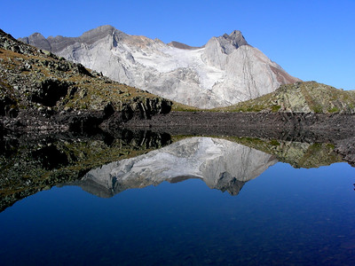
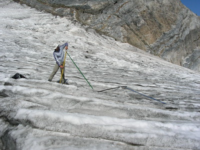
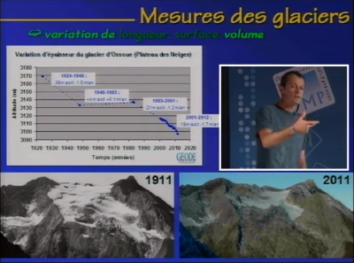

A l’aube du 21ème siècle, les glaciers des Pyrénées françaises souffraient d’une méconnaissance importante (effectifs, localisations, caractéristiques). En effet, ils n’avaient pas connu d’observations d’ensemble depuis la fin des années 1980. Tandis que sur le versant espagnol, ils font l’objet d’un suivi annuel régulier et l’on connaît précisément leurs évolutions.
Créée en 2001, L’association « Moraine » est l’Observatoire des Glaciers des Pyrénées françaises. Elle a donc pour objectif de suivre annuellement leur évolution (longueur, surface, volume). Une collaboration étroite avec les glaciologues espagnols permet d’avoir des informations complètes à l’échelle de la chaîne. De plus, l’objectif est de diffuser largement les connaissances sur le sujet grâce à différents moyens de communication (internet, conférences, livre, exposition, médias).



L'association Moraine s'appuie sur le support ou la collaboration d'un certain nombre de partenaires.
En savoir plus